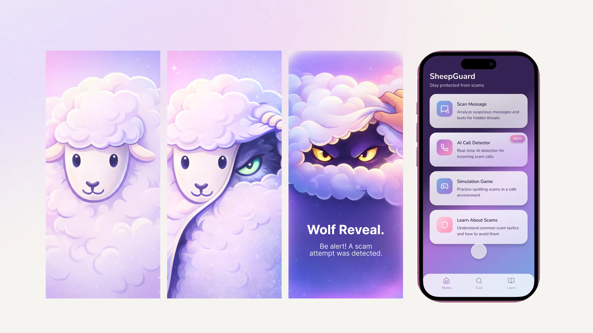
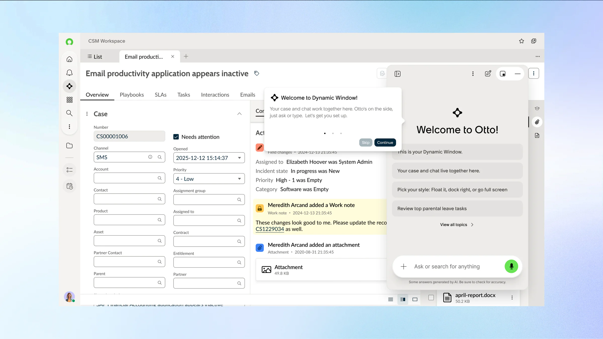

Ruiying Xu portfolio featuring UI/UX, brand, and visual design work.
01 / About
Designed for
clarity.
Made to feel.
I turn complex ideas into calm, considered digital experiences. My practice moves between product, identity, and the small moments that make an interface feel human.
Currently designing independently in New York and collaborating with teams worldwide.
More about me ↗02 / Selected work
A selection of product, brand, and visual design work.
03 / Featured case study
Designing a more inviting path into art learning.
View project ↗Product concept, interface design, visual system
Make course discovery, creative guidance, and mentorship feel warm, structured, and easy to navigate.
A mobile learning direction that feels expressive while staying clear and approachable.

04 / Approach



-
01
Understand
Listen closely to people, context, and constraints before drawing conclusions.
-
02
Frame
Translate research into a sharp point of view and a system for making decisions.
-
03
Shape
Explore, test, and refine details until the experience is both distinctive and intuitive.
-
04
Deliver
Hand off thoughtful, scalable work that gives teams a confident next step.
05 / Experience
Building at the intersection of visual expression and digital utility.
Independent Designer
New York / Worldwide
Product & Visual Design
Selected collaborations
Design Studies
School of Visual Arts